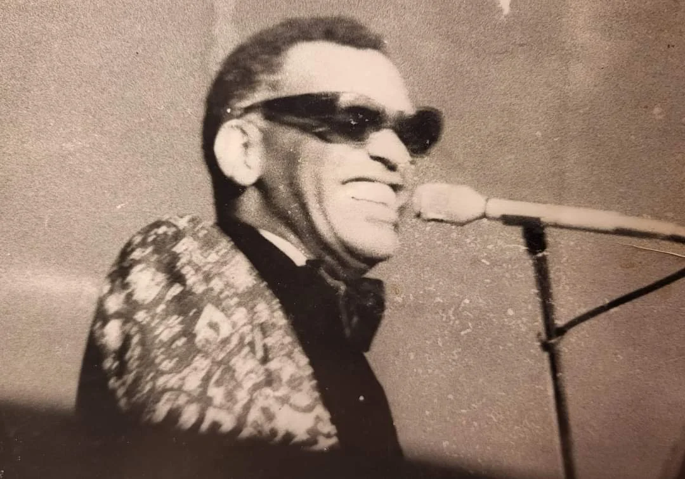
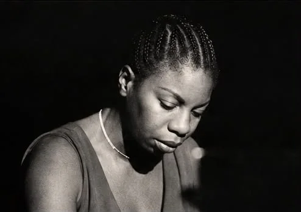
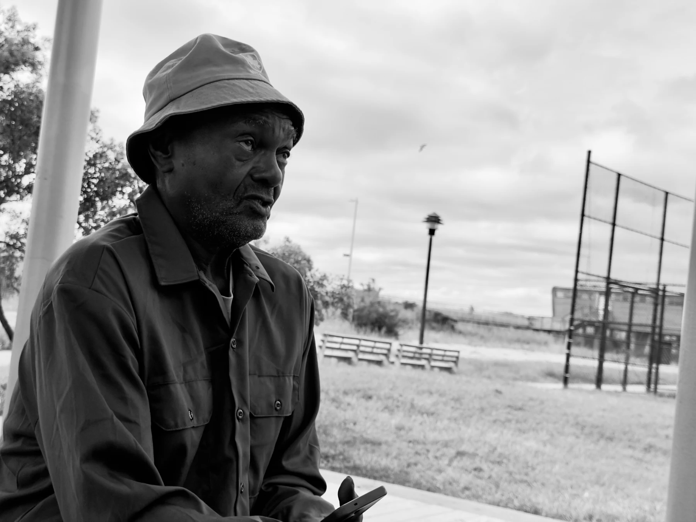
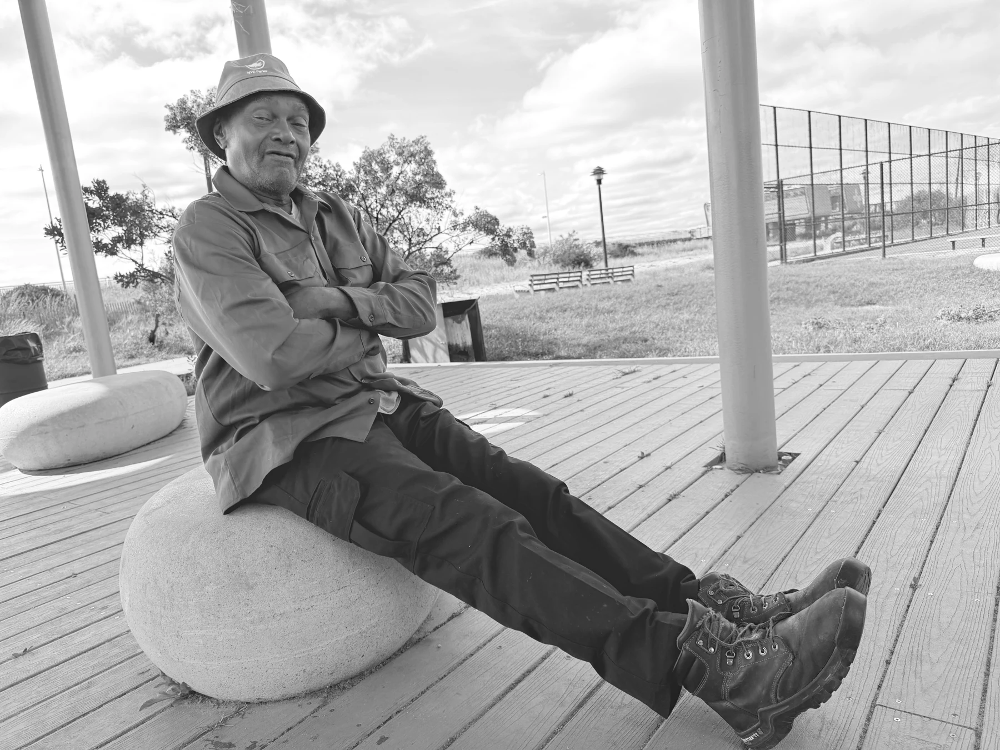

License the archive.
Editorial, publishing, documentary, and commercial image requests. Tell us which photograph, where it will appear, and how you plan to use it.

FROM THE ARCHIVE / NO. 010A LIFE IN FOCUS
Black music. The movement. The moments in between.
More than 55 years of history through the lens of Kenneth “Kenny” Harris.
01 / THE PHOTOGRAPHIC ARCHIVE
A front-row seat to history.
Discover a photograph. Begin a conversation.
No photographs match your search. Try an artist’s name or a different collection.

NINA SIMONE / THE EARLY WORKSA PLACE IN YOUR COLLECTION
Bring a piece of the Kenneth Harris archive into your home, gallery, or institution.
Inquire about limited-edition fine art prints, silver-gelatin printing, archival framing, and signed certificates of authenticity. Available formats and edition details are confirmed personally by the archive.
Prints, publications, and merchandise are available by inquiry.
02 / THE MAN BEHIND THE CAMERA
At five, Kenny Harris was helping his father in the darkroom. By fifteen, he was photographing music legends. The camera became his way of keeping the people, places, and stories around him alive.
From South Jamaica to Madison Square Garden, from the Million Man March to backstage with generations of artists, his photographs are a record of culture from the inside.
Kenneth “Kenny” Harris PHOTOGRAPHER · WITNESS · NEW YORKER

MEET KENNY HARRIS
The presentation could not load. Please try again later or contact the archive.
“A photograph stops time. It stops death. As long as these files exist, we exist.”— KENNETH HARRIS
Born in 1955 at Queens General Hospital and raised in the 40 Projects of South Jamaica, Kenny grew up around photography. After his father Jack Harris’s death, his eldest brother, Ptah Hotep, placed a Canon rangefinder in his hands.
As a teenager, he photographed Ray Charles, Aretha Franklin, and Nina Simone, found his way courtside at Madison Square Garden, and documented the 1973 funeral of Clifford Glover.
After stepping away from photography in 1974, Kenny returned to the camera in 1995 at his brother’s urging. At the Million Man March, he spent approximately twenty hours photographing on the National Mall and exposed twenty rolls of film.
Alongside his wife and creative partner, Cynthia Horner, he continued documenting music, politics, entertainment, and Black cultural life. Together, they co-founded Cinnamon Flix and Right On Media LLC.
An athlete, community organizer, distance runner, and public servant, Kenny helped build community through basketball tournaments at IS 8 and Montebello Park. He also worked for the New York City Parks Department.
Today, preserving his negatives, prints, contact sheets, and uncut rolls of film means preserving the people and stories within them.
03 / BRING THE ARCHIVE INTO YOUR WORLD
For editors, filmmakers, curators,
institutions, and cultural collaborators.
Editorial, publishing, documentary, and commercial image requests. Tell us which photograph, where it will appear, and how you plan to use it.
Start a conversation about museum acquisitions, university programs, a traveling exhibition, or a corporate collection.
Connect with Kenneth Harris or Cynthia Horner for interviews, press features, panel discussions, and speaking engagements.

KENNY THE
PHOTOGRAPHER
04 / THE NEXT CHAPTER
DOCUMENTARY / IN POST-PRODUCTIONKenny The Photographer: The Archive follows the life and work behind more than half a century of images, with Cynthia Horner helping bring the stories into focus.
Help bring the documentary to audiences. We welcome conversations with patrons and partners about post-production, sound mixing, and festival submissions.
05 / KEEP THE STORIES ALIVE
Preservation is a collective act.
Help make this history accessible for years to come.
EVERY GREAT COLLECTION BEGINS WITH A CONVERSATION.
Acquisitions · Licensing · Exhibitions · Preservation